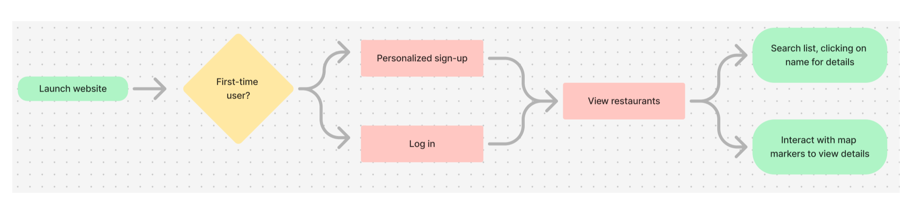
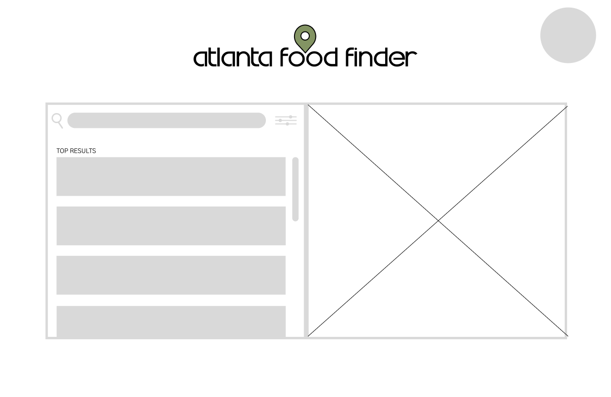
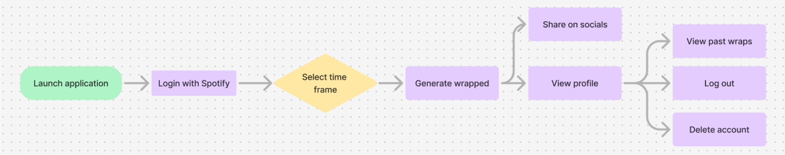
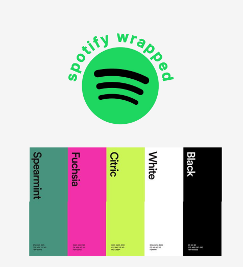

Process Demonstration
This page details the process followed to build the projects, including brainstorming sessions, development sprints, testing, and iterations.

- Planning Phase: Outlining the Project Goals
- Design Phase: Creating Mockups and Prototypes
- Development Phase: Building the Project
- Testing & Deployment: Ensuring Functionality
This project was split into two sprints. Sprint 1 focused on user stories like user authentication and front-end wireframing, while Sprint 2 tackled back-end functionality, profile management, and a responsive UI. To keep things organized, the team used shared tools such as Google Calendar, Trello, and Discord for communication and task management.
We started each sprint with a planning meeting to decide which user stories to tackle, followed by daily updates via Discord channels. After each sprint, we held review meetings, reflecting on how we could improve. For instance, in Sprint 1, we realized the need for better communication, leading to the creation of a "drop-in work" voice channel in Discord. This improved collaboration and productivity.
We began the design phase by creating a user flow and wireframes using Figma. Next, we developed a brand identity, which we applied to the wireframes, transforming them into prototypes.
The design decisions were made with simplicity and usability in mind. We opted for a clean, minimalist approach with familiar UI elements, such as filter buttons, to ensure a user-friendly experience.
With the pre-planning in place, we dove into development. Initially, we struggled with using Git and GitHub effectively, but quickly gained proficiency. We started with the Django tutorial framework to initialize the project.
Each user story was broken into smaller tasks and assigned to team members. Code reviews became an essential part of our workflow, ensuring quality and knowledge sharing. By collaborating closely, we ensured the project’s progress remained on track.
We used Git branching strategies to test code before merging into the main branch to avoid conflicts. Testing was done continuously throughout the development cycle to ensure functionality and resolve any issues early on.
- Planning Phase: Outlining the Project Goals
- Design Phase: Creating Mockups and Prototypes
- Development Phase: Building the Project
- Testing & Deployment: Ensuring Functionality
This project was split into two sprints. The first sprint focused on user authentication, working with Spotify's API, and creating basic front-end designs. The second sprint focused on connecting front-end and back-end functionality, developing the profile management system, and ensuring the UI was responsive across devices. We again used tools like Google Calendar, Trello, and Discord for team coordination.
We followed a similar communication strategy from the previous project. Each sprint began with a planning meeting, and daily updates were shared via Discord. Sprint reviews helped us reflect on our progress and make improvements. For instance, we set up a semi-weekly updates channel to stay accountable and troubleshoot problems as a team.
We used Figma to create detailed wireframes and user flows, followed by prototypes that reflected the app’s branding and functionality. The front-end developers focused on making the design visually appealing while ensuring it worked across different screen sizes.
We aligned the design with Spotify's branding, maintaining a modern and eclectic feel. Bright colors and abstract shapes were incorporated to enhance visual engagement while preserving the Spotify vibe.
This stage was smoother as we were more comfortable with Django and GitHub. The main challenge came with user authentication, as we had to integrate Spotify’s API for unique user profiles. However, we overcame this by working collaboratively and refining our user authentication flow.
Each user story was broken into smaller tasks, and code reviews were essential for maintaining quality and ensuring progress. Collaborating and supporting each other helped keep the project on track.
Throughout the project, we ensured testing was continuous, using Git branches for testing new features and avoiding conflicts. Testing was done iteratively, allowing us to catch and fix bugs early, which was critical for smooth deployment.